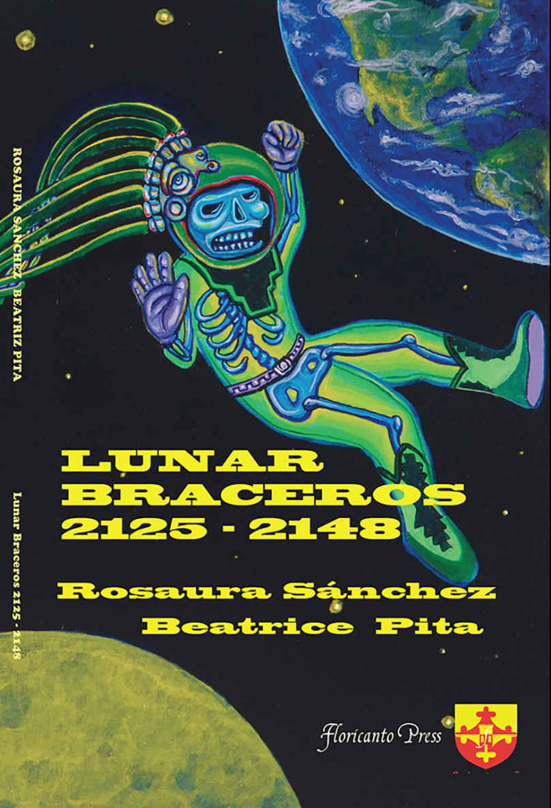

Teaching Multicultural Literature:
Toward a Futurism Pedagogy?
"Instead of the past it is the future that haunts us now."
- Louise Erdrich in Future Home of the Living God
“Is our future a thing of the past?
- father in Sleep Dealer directed by Alex Rivera
Early in the 20th Century, emerging in Italy and spreading across Europe, Futurism was an artistic and social movement that explored modernity, youth, new technologies, new modes of industry and transport.
In the 21st Century, ethnic Futurisms, including Afrofuturism, Indigenous Futurism, and Chicano / Latin@ Futurism, are emerging to challenge dominant paradigms, assert the persistence, indeed resurgence, of previously marginalized groups, resist Western ways of knowing and ordering society, challenge rationality/reason/capitalism as inherent in the colonial project, and resist nature vs culture binaries and existing definitions of what it means to be human.
These new futurisms disrupt notions of dystopia as new or impending, instead emphasizing how military/police states, surveillance, social and environmental collapse and reconfiguration permeate the past and present.
They confront frightening futures and offer ways of seeing and being that might allow coping, even transforming possibilities in the present.
In Postcolonial Ecocriticism, Huggan and Tiffan write, “Global warming requires not just new ways of thinking beyond the human, but also a renewed attention to the long histories of slavery and colonialism, which need to be rethought in ecological terms..." New ethnic futurisms are doing this kind of work.
In a provisional and experimental way, this seminar will explore the pedagogical implications of the new futurisms. If multicultural, antiracist education has traditionally focused on understanding the present through the lens of the past, I wonder if futurism might allow us to see the past through the lens of the future, and, constructively, prepare us to live in the present with the future in mind.
The syllabus remains underconstruction as our understanding evolves.
In some measure this seminar builds on previous courses I have taught including African American and African Literature, a course on literature and climate refugees, and graduate seminars in Advanced Methods of Teaching Literature, Studying and Teaching Multicultural Literature, Postcolonial Literature, and Teaching About Climate Change.
The seminar welcomes and will be relevant to graduate students in English in literature, creative writing, writing studies, English education, and education generally. The seminar will support teaching relevant to diverse disciplines and interests.
Teachers need to be informed what is happening in their local communities and around the world. Students in this class are expected to read from a variety of news sources and are invited to bring issues to our class for discussion. WMU provides a free NYT subscription.
Course Success
Since the seminar is discussion-based, attendance and preparation are essential to your own learning and to the learning of your classmates. Missing more than two weeks of the seminar will lower your grade and missing 3 or more may lead to failing. Study my philosophy regarding discussion, preparation, participation, attendance, grading, and learning -- and consider your own philosophy!
Your final course grade will be an average of grades for the major assignments, listed and weighted below. At the hour scheduled for the final exam students will present their final project.
This course will follow WMU policies regarding academic honesty.
My office is 723 Sprau Tower, 387-2605. Office hours are after class and by appointment. You can always reach me via email.
Parable of the Sower, by Octavia Butler
The Marrow Thieves, by Cherie Dimaline.
Walking the Clouds, edited by Grace Dillon
Sleep Dealer, directed by Alex Rivera
Lunar Braceros 2125-2148, Rosaura Sanchez and Beatric Pita
Los Vendidos, by Luis Valdez & Teatro Campesino / television/video reproductions
performance pieces by Guillermo Gomez-Pena

Selections From:
Afrofuturism: The World of Black Sci-Fi and Fantasy Culture by Ytasha Womack
Altermundos: Latin@ Specultive Literature, Film, and Popular Culture by Catherine Merla-Watson
The Dark Fantastic: Race the Imagination by Ebony Thomas
And many more, see syllabus below
Major Assignments

|
Class Participation: Reading, Viewing and Weekly Assignments not otherwise listed (20%) Afrofuturism, Indigenous Futurism, Chicano/Latin@ Futurism Futurism Text Comparisons /Teaching Ideas Presentations 10% each (total 30%) Genre Comparison Presentation & Handout (10%) Final Project (40%) |
Electronic Syllabus
Sept 9: Introductions
1. Look at previous seminars, 6100 & 6780, prepare to read Lagoon
Sept 16: Afrofuturism
1. Read carefully through the entire on-line syllabus. Bring any questions about the syllabus and assignments to class.
2. Join our class phone message system, Remind. If you have a smartphone go to this page in your web browser and follow instructions: rmd.at/4bb266. If you don't have a smart phone text "@4bb266" to this number "81010". If you don't have a cell phone go to rmd.at/4bb266 and sign up for email notification.
3. Read: Lagoon Nnedi Okorafor.
4. Interesting: African myths of Mami Wata, Also the projected population growth of world's largest cities.
5. Optional: Looking Forward, Looking Back" by Esthie Hugo, Social Dynamics 2017 43.1
Sept 20: Global Climate Strike (Friday)
Sept 23: Afrofuturism, continued
1. Read: Parable of the Sower by Octavia Butler
Sept 30: Afrofurism, continued
1. Read a work of African or African American literature or a new work of Afrofuturism and prepare a presentation for the class making connections and proposing teaching ideas.
Works you might choose from: Narrative of the Life of Frederick Douglass, Things Fall Apart (Achebe) Beth, Allie, Linda, Efuru (Nwapa), Palm Wine Drinkard (Tutuola), Famished Road (Okri), So Long a Letter (Ba), Oil on Water (Habila), Their Eyes Were Watching God (Hurston), Beloved (Toni Morrison), I Know Why the Caged Bird Sings (Angelou), Praisesong for the Widow (Marshall), Born a Crime (Noah), The Water Dancer, (Coates)
Works with a futuristic element: Flight to Canada (Ishmail Reed), Mulatto (Langston Hughes)
Afrofuturism: Black Panther (film and comics), A Blade So Black (McKinney), Children of Blood and Bone Sam, Heather, Katie, (Adeyemi), Akata Witch (Okorafor), Akata Warriorem (Okorafor), Children of Virtue and Vengeance (Adeyemi), The Belles (Clayton), An Unkindness of Ghosts (Soloman), The Jumbies (Baptiste), Nigerians in Space (Olukotan) Orleans (Smith) Dread Nation (Ireland), Moxyland & Zoo City (Beukes), AfroSF, 2015 online issue of Jalada Africa "AfroFutures 02" short story collection, Afro-futurist film from Africa including: District 9 (South Africa), Pumzi (short from East Africa), Crumbs (Ethiopia). Afrofuturist Music
Oct 7: Afrofuturism and Educational Thought
Read the historical background and all of the selections. Then write a couple of pages comparing one educational thought piece with one Afrofuturist piece:
Brief Historical Background:
"Burning Books and Destroying People: How the World Became Divided Between Rich and Poor Countries," Bob Peterson
Educational Thought:
I Won't Learn from You! Herbert Kohl
Approaches to Multicultural Curriculum Reform , James Banks
“Thoughts on Teaching Native American Literature," Joseph Bruchac
“Teaching Critical Thinking," Bell Hooks
Afrofuturist Theory:
The Dark Fantastic: Race and the imagination from Harry Potter to the Hunger Games, Ebony Thomas
Afrofuturism: The World of Black Sci-Fi and Fantasy Culture, Ytasha Womack
"Toward a Planetary History of Afrofuturism," Sofia Samatar
Oct 14: Indigenous Futurism
1. Read: The Marrow Thieves by Cherie Dimaline
2. Read: "Journal of an Emigrating Party of Pottawatomie Indians, 1838"
Oct 21: Indigenous Futurism, continued
1. Read: Ghost Dance
2. Read: from Walking the Clouds: An Anthology of Indigenous Science Fiction: Introduction: "Imagining Indigenous Futurisms,"" "Custer on the Slipstream," "Aunt Parnetta's Electric Blisters," "from Flight," "Men on the Moon," "from Mindscape," "Distances," "When This World Is All on Fire," "from Almanac of the Dead," "from The Bird is Gone: A
MonographManifesto."3. "Prisoner of Haiku" Gordon Henry, "The Return of the Buffalo" Leslie Marmon Silko
4. "Indigenous Futurism as Game Design," Elizabeth LaPensee (30 mins)
Oct 28: Indigenous Futurism, continued
1. Read a work of Native American literature or a new work of Indigenous futurism and prepare a presentations for the class making connections and proposing teaching ideas.
Traditional works you might choose from: Life Among the Piutes, Way to Rainy Mountain -Beth, Morning Girl -Allie, Fools Crow, Mean Spirit -Hana, Slash, Tonto and the Lone Ranger Fist Fight in Heaven - Cody, Katie suggests American Indians in Children's Literature as a good resource for finding materials.Huasipungo and Indigenist Literature - Mamen, "La noche boca ariba," & "La culpa es de los tlaxcaltecas" - Heather
Indigenous Futurism: Future Home of the Living God (Erdrich) -Shelly & Catrina, Mapping the Interior (Jones) - Sam, House of Purple Cedar (Tingle) -Katie, Robopocalypse (Wilson), Love Beyond Body, Space and Time (Nicholson), Deer Woman: An Anthology (Lapensée and Weshoyot), Monkey Beach (Robinson), Love Beyond Body, Space, and Time: An Indigeous LGBT Sci-fi Anthology, Take Us to your Chief (Taylor), Kynship (Justice), Mitêwâcimowina, The Swan Book (Wright), Trail of Lightening (Roanhorse) -Ellen & Linda The Interrogation of Ashala Wolf (Kwaymullihna) - Trista, Riding the Trail of Tears, (Hausman), Flight (Alexie) - Hana, Fast Red Road (Jones), Refugees, (Amberstone), The Black Ship (William), Midnight Robber (Hopkinson) -Paula, Land of the Golden Clouds (Weller), The Moons of Palmares (Amadahy), Star Waka (Pushi), Almanac of the Dead (Silko), short films: The Sixth World, Wakening, The Path Without End.
Nov 4: Comparing Futurism Genres
1. Choose two or more works of ethnic futurism from different genres (literature, visual arts, music, clothing, design, etc.), write a few of pages comparing them and suggesting ideas for teaching about them, and plan to share with the class what you have learned.
2. Start writing your final project and plan to share some of your ideas with the class.
3. Share your research and ideas on Comparing Futurism Genres Google Doc. The page is publicly viewable.
Nov 11: Chicano & Latin@ Futurism: Smart Walls
1. View Sleep Dealer directed by Alex Rivera, available on Amazon Prime Video & Read "The "Smarter" Wall" and "A Crime by Any Name."
2. Read Introduction to Lunar Braceros and & read Lunar Braceros, 2125-2148 by Rosaura Sanchez and Beatrice Pita, Available on Amazon Kindle3. Read "Contrapuntal Cyborgs?: The Ideological Limits and Revolutionary Potential of Latin@ Science Fiction" by BV Olguin.
Nov 18: Roots of Chicano Futurism
1. Read: "Afro-Futurism-Chicano Futurism" by Ramirez
2. Read script and then view a version of the play: Los Vendidos (play script) by Luis Valdez & Teatro Campesino production of Los Vendidos.3. View: performance pieces by Guillermo Gomez-Peña: The Couple in the Cage, and ten-fifteen minutes of "The mexterminater"
4. Start a Wix website that will eventually present your final project. On this site describe the course you plan to transform with a futurism approach, provide a partial/provisional description of some of the texts you plan to use (literary and otherwise), and perhaps describe a teaching idea. Eventually the site will have links, resources, etc. Time permitting you can begin those.
Nov 25: Chicano & Latin@ Futurism
1. Read a work of Chicano literature or a new work of Chicano or Latino Futurism and prepare an oral and written report for the class making connections and proposing teaching ideas
Chicano Literature you might read: Barrio Boy (Galazara), Bless Me Ultima (Anaya), House on Mango Street (Cisneros) ALLIE, YA works by Gary Soto, And the Earth Did Not Devour Him (Rivera), Aristotle and Dante Discover the Secrets of the Universe (Saenz), Hummingbirds Daughter (Urrea), Always Running (Rodriguez), Borderlands/La Frontera (Anzaldua)
Chicano/Latino Futurism you might read: Smoking Mirror Blues (Hogan), Infomocracy (Older) PAULA, Shadowshaper (Older) SHELLEY, Summer Prince (Alaya Dawn Johnson) CATRINA, More Happy Than Not (Silvera) ELLEN, Extraction (Diaz), Dealing in Dreams (Rivera) HANA, Honor Among Thieves (Aguirre & Caine) SAM, Infomocracy (Older), Ambassador (Alexander) BETH, Atomik Aztec (Foster), Bruja Born (Cordova) TRISTA, Rag Doll Plagues (Morales), Texas 2077 (Miralejos), Santa Olivia (Carey), Isa (film, Nestor Marquez), The Farthest Home Is in an Empire of Fire (Santos) MAMEN, Sudden Death (Enrique) CODY, Summer of the Mariposas, (Garcia McCall) KATIE 1 & 2.
Nov 27: Thanksgiving Break
Dec 2: Final Project Work Session
Dec 9-20 Final Exam Week
Dec 9: Final Exam: Presentation of Final Projects
Writing, Reading, and Cultures: an ELA Methods Course, Shelly Esman
Literature for the Young Child, Catrina Beeny
8th Grade English, Multicultural and Social Justice Topics, Heather Dolegowski
8th Grade English Language Arts through an Ethnic Futurism Lens, Katie Sluiter
Basic Reading, Community College, Paula Westdorp
English 1100: Introduction to Literature: Alien Literature, Samantha Moran
Third Year Spanish, Allison Lamers
Spanish Literature, 4ESO, Mamen Rodriguez
Contemporary English Literature taught abroad, perhaps in the Middle East, Hana Saeed
Introductory Literature, Beth Spinner
Modern Mexican Literature in Translation, Cody Harrison
6th Grade English, Trista Straub
Anthropology & Literature 1500, Linda Massey
Multicultural Childrens Literature, Ellen Foley